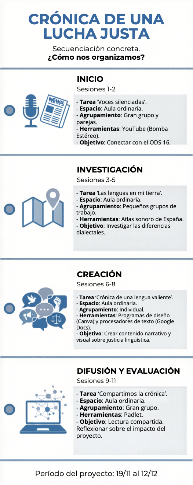

Para que no te pierdas en este viaje periodístico, aquí tienes el cronograma detallado. Trabajaremos durante 11 sesiones, desde el 19 de noviembre hasta el 12 de diciembre.

SdA
Para que no te pierdas en este viaje periodístico, aquí tienes el cronograma detallado. Trabajaremos durante 11 sesiones, desde el 19 de noviembre hasta el 12 de diciembre.
